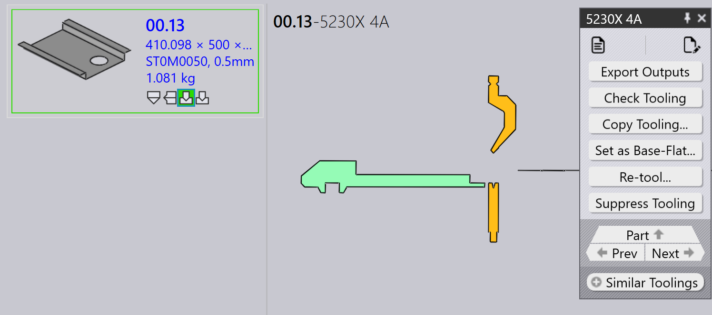

Toolingpaneel
Deze sectie beschrijft toolinggerelateerde acties zoals Export outputs, Check Tooling, Suppress Tooling, Set as Base-Flat…, Copy Tooling en andere opties die worden gebruikt om toolinginstanties te beheren.

|
|
Export Outputs
Met deze optie wordt de onderdeeluitvoer geëxporteerd naar de bestemming die is geconfigureerd in Factory Settings. (Zie Buiginstellingen en Snij-instellingen)
Alleen de toolings die zijn gekoppeld aan de geselecteerde toolingbewerking worden geëxporteerd, niet het hele onderdeel.
| De geëxporteerde bestanden zijn afhankelijk van het bewerkingstype. Voor buig- en vouwbewerkingen worden NC-bestanden en rapporten gegenereerd. Voor snij- en ponsbewerkingen worden alleen de onderdeelbestanden geëxporteerd. |
Check Tooling
-
Als er een wijziging is in de CAM-instellingen of als een buiggereedschap verloren gaat, hoeft u het onderdeel niet opnieuw te toolen.
-
Gebruik in plaats daarvan Check Tooling om de bestaande tooling te valideren zonder wijzigingen aan te brengen.
-
Als de validatie mislukt, wordt de toolingstatus van die instantie bijgewerkt en worden de gerelateerde uitvoerbestanden verwijderd.
-
Check Tooling detecteert ook onderdelen waarbij fouten eerder handmatig zijn overschreven met Ignore Errors, en werkt hun status indien nodig bij naar fout.
Copy tooling
Met copy tooling kunt u snel buigtooling van de ene oplossing op andere toepassen, wat tijd en moeite bespaart.
Hiermee wordt de stempel-, volgorde- en achteraanslagopstelling van een geselecteerde referentietooling (oplossing) gekopieerd en worden dezelfde instellingen op alle andere oplossingen geprobeerd.
-
Als de gekopieerde opstelling haalbaar is voor een doelmachine, wordt deze opgeslagen en gebruikt.
-
Als de opstelling niet haalbaar is, blijft de oorspronkelijke tooling voor die machine ongewijzigd.
U kunt bijvoorbeeld verschillende tooling voor verschillende machines hebben:
-
Hier gebruikt Machine 5230X 4A een Gooseneck-stempel en Machine 5230SX 6A een Pointed-stempel.

Wanneer u Copy Tooling… gebruikt op Machine 5230X 4A, wordt geprobeerd de Gooseneck-opstelling naar alle andere machines te kopiëren.

Dezelfde stempel-, volgorde- en achteraanslaginstellingen worden waar mogelijk toegepast. Als de gekopieerde opstelling niet kan worden gebruikt, blijft de oorspronkelijke tooling ongewijzigd.

Na het toepassen van copy tooling is de Gooseneck-opstelling succesvol toegepast op alle andere machines waar dit haalbaar is.
Set as Base-Flat…
Met de functie Set as Base-Flat… wordt gedefinieerd welke buig- of vouwtooling wordt gebruikt als het referentie-uitslagformaat voor het genereren van snijoplossingen. Wanneer een tooling als Base-Flat wordt gemarkeerd, werkt TruSmartCAM het uitslagformaat van het onderdeel bij op basis van die machine en genereert het de snijoplossingen dienovereenkomstig opnieuw. Base-Flat- toolings worden weergegeven met een blauwe rand in de UI.
Verschillende buigmachines kunnen kleine variaties in het uitslagformaat voor hetzelfde onderdeel opleveren. Wanneer u een tooling als Base-Flat instelt, gebruikt TruSmartCAM het uitslagformaat van die machine als hoofdreferentie en herberekent het automatisch de snijoplossingen.
Hier zien we verschillende uitslagformaten voor hetzelfde onderdeel op verschillende machines:

In dit voorbeeld wordt de tooling 5230X 4A ingesteld als de Base-Flat en wordt het bijgewerkte uitslagformaat toegepast in de onderdeeleigenschappen:

Automatische base-flat-selectie
Wanneer de fabrieksinstelling Apply flat correction during bending is ingeschakeld:

-
TruSmartCAM stelt automatisch de buigtooling (die de tabel met maximale buiglengte bevat) in als de Base-Flat tijdens het importeren van het onderdeel.
-
Als de geselecteerde buigtooling een fout tegenkomt of niet haalbaar is, schakelt TruSmartCAM intelligent over en stelt een andere geldige buigtooling in als de Base-Flat. Dit zorgt ervoor dat de uitslagformaatreferentie en snijoplossingen altijd consistent en geldig blijven zonder handmatige tussenkomst.
Verbeterd base-flat-beheer
TruSmartCAM biedt Base-Flat-opties in het dialoogvenster Save to Praxis bij het opslaan van buig- of vouwtoolingbewerkingen. Deze opties verschijnen alleen voor toolings in de OK-status en zorgen ervoor dat het uitslagformaat en de snijoplossingen nauwkeurig blijven.
Set as Base-Flat and calculate cutting solution
Deze optie wordt gebruikt om een tooling voor het eerst als Base-Flat te markeren en automatisch de bijbehorende snijoplossing te genereren.
Verschijnt wanneer:
-
De tooling momenteel niet als Base-Flat is gemarkeerd.
-
De gebruiker de tooling heeft uitgecheckt om te bewerken en de wijzigingen opslaat.

Om deze optie te gebruiken, checkt u de buig- of vouwtooling uit en brengt u de vereiste wijzigingen aan, zoals wijzigingen in buigparameters of uitslagformaat. Druk op Ctrl+S om de wijzigingen op te slaan. Kies in het dialoogvenster Save to Praxis de optie Set as Base-Flat and calculate cutting solution en klik op OK. TruSmartCAM stelt de tooling in als de Base-Flat en genereert de snijoplossing met het bijgewerkte uitslagformaat.
Update the base-flat and re-calculate cutting solution
Deze optie wordt gebruikt wanneer de tooling al als Base-Flat is gemarkeerd en is bewerkt, waardoor het uitslagformaat en de snijoplossingen opnieuw moeten worden gegenereerd.
Verschijnt wanneer:
-
De tooling al als Base-Flat is gemarkeerd.
-
De gebruiker deze heeft uitgecheckt, bewerkt en de wijzigingen opslaat.

Werk bij het bewerken van de bestaande Base-Flat-tooling de buigparameters of uitslagformaatgeometrie naar wens bij. Kies in het dialoogvenster Save to Praxis de optie Update the base-flat and re-calculate cutting solution. TruSmartCAM werkt vervolgens de Base-Flat-tooling bij en genereert alle gerelateerde snijoplossingen opnieuw om de laatste wijzigingen weer te geven.
|
Er kan slechts één buigtooling tegelijk als Base-Flat worden ingesteld. Wanneer de Base-Flat wordt gewijzigd, worden bestaande snijoplossingen automatisch opnieuw verwerkt. Deze functie is beschikbaar voor zowel buig- als vouwtoolings binnen TruSmartCAM. |
Re-tool
Met deze optie wordt de geselecteerde tooling voor het onderdeel opnieuw verwerkt.
Klik met de rechtermuisknop op de gewenste tooling in het toolingpaneel en klik op Re-tool…
Er wordt een bevestigingsdialoogvenster weergegeven voordat u doorgaat.

Klik op Yes om door te gaan met het opnieuw toolen, of op No om de bewerking te annuleren.
Alleen de geselecteerde tooling wordt opnieuw getoold. Andere toolings die aan het onderdeel zijn gekoppeld, worden niet beïnvloed. De bestaande uitvoer met betrekking tot de geselecteerde tooling wordt verwijderd en tijdens het opnieuw toolen opnieuw gegenereerd.
Gebruik deze optie wanneer toolinggegevens verouderd of onjuist zijn, of wanneer er wijzigingen worden aangebracht in machine- of toolingconfiguraties.
Ignore errors
-
Als een getoolde instantie een waarschuwing toont en u er toch mee wilt doorgaan, kunt u de waarschuwing overschrijven door op Ignore errors te klikken.
-
Hiermee kan het systeem uitvoerbestanden voor die instantie exporteren, zelfs als er toolingproblemen waren.
| Gebruik Ignore Errors alleen wanneer u zeker weet dat de waarschuwing veilig kan worden genegeerd. Het overschrijven van daadwerkelijke fouten kan leiden tot machineschade of veiligheidsrisico’s. |
Tooling onderdrukken/onderdrukking opheffen
-
Wanneer een machine inactief is of u niet wilt dat een specifiek onderdeel wordt verwerkt door een bepaalde machine, gebruikt u Suppress Tooling om dat onderdeel uit te sluiten van nesten op die machine.
-
Na het onderdrukken toont het bewegen van de muisaanwijzer over de getoolde instantie een bericht als: “Tooling suppressed by <User name> on <Date Time>”.
-
Suppress tooling verwijdert het uitvoerbestand voor die machine en dat onderdeel.
-
Gebruik Unsuppress tooling om de toolingstatus voor het onderdeel op die machine te herstellen.
-
Wanneer de onderdrukking wordt opgeheven, wordt het betreffende uitvoerbestand opnieuw gegenereerd.